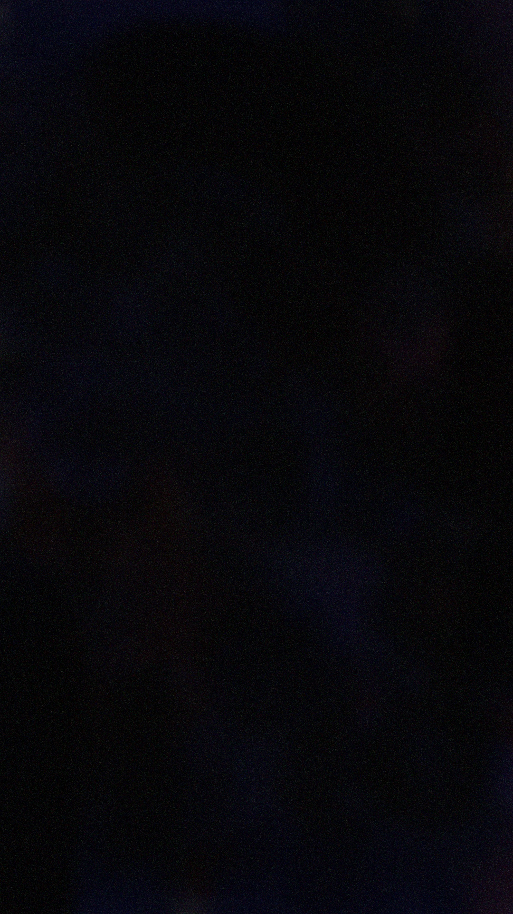

Väsymys alkaa herätyskellosta, joka soi tänään kahdeksalta. Puoli yhdeksän jälkeen nousen ja syön aamupalaa. Laitan tiskikoneen ja pyykkikoneen päälle. Siirryn sohvalle lepäämään.
Kolmentoista jälkeen makaan yhä sohvalla. Olen avannut tietokoneen neljästi mutta sulkenut myös. Katson tiktokia. Kaunista musiikkia, kammottavaa kuvastoa, nopeaa, nopeaa, nopeaa videoiden virtaa. Mielenkiinto ei herää. Tunteita, ei niitäkään - päin vastoin. Tiettyjen videoiden taustalla soiva musiikki tuo tyhjyyden. Sellaisen kosmisen, neutraalin, etäisen, piittaamattoman. Kuin näkisi unta tai istuisi yksin höyrysaunassa tai uppoaisi silmät kiinni haaleaan veteen.
Syön lounasta. Makaronia, soijarouhetta, ketsuppia. Juon kahvia. Levitän pyykit, mutta tiskikonetta en tyhjennä. Palaan sohvalle. Olen zen kuin Temppari-Joni.
Kuudeltatoista tiedostan, että pian pitää lähteä. Sitä ennen selaan. En ymmärrä mikseivät ihmiset ole kauhuissaan. Oikeasti ymmärrän. Enhän minäkään ole kauhuissani. Tai ehkä olisin jos jaksaisin, mutta tänään olen väsynyt. Ehkä jopa haluaisin olla, ainakin mieluummin kuin väsynyt, mutta tänään haluan nukkua. Selaan. Sitten pitääkin lähteä.
Saavun takaisin kaksikymmentäyksi. Nostelen puhtaat astiat kaappiin. Syön, tiskaan. Enää en ole väsynyt, mutta on mentävä nukkumaan, joten kaksikymmentäkaksi nappaan purkista pitkävaikutteisen melatoniinin ja kiipeän sänkyyn.
Nukahdan. Unessa olen pirteä.
Selitys/selittelyjä
Halusin ensimmäisen tekstin toimivan johdatuksena tulevaan. Niin, että tulevaisuudessa voisin palata tähän ensimmäiseen ja todeta että "kyllä, siitähän se tosiaan lähti".
Pohdin pitkään, olisiko alun herätyskello pitänyt kirjoittaa (herätys)kello. Näin toistuvien kellonaikojen merkitys olisi vielä selkeämpi. Jostain syystä päätin kiroittaa sen kuitenkin herätyskello.
En jaksa nyt selittää kaikkea auki. Lisään tähän ehkä jotain myöhemmin.
JOS HALUAT KOMMENTOIDA JOTAIN, PISTÄ DM. HALUTESSASI VOIN JULKAISTA KOMMENTTISI TÄNNE SIVUN ALAREUNAAN.